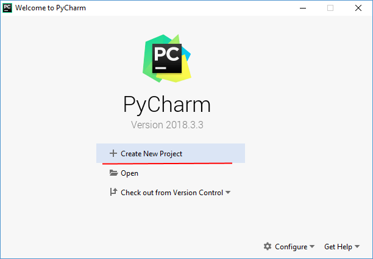
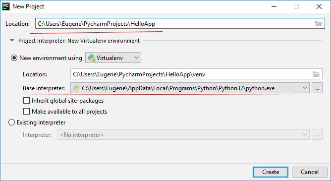
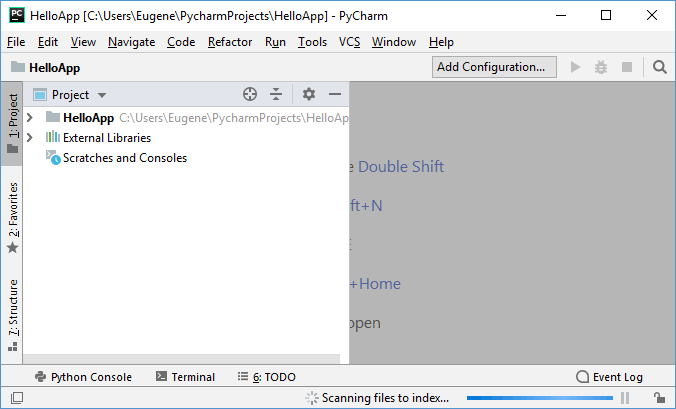
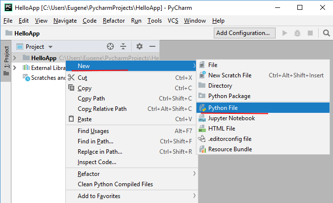
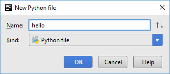
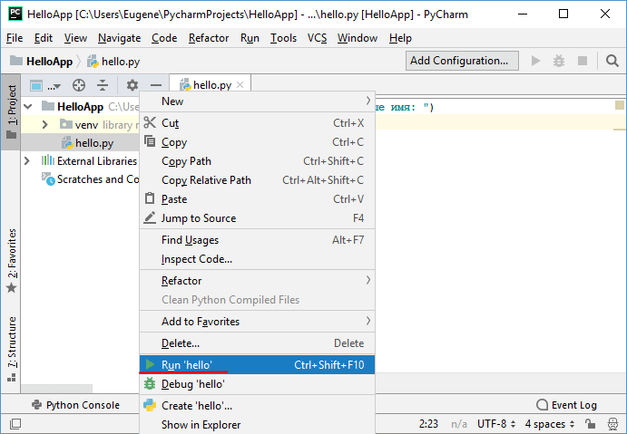
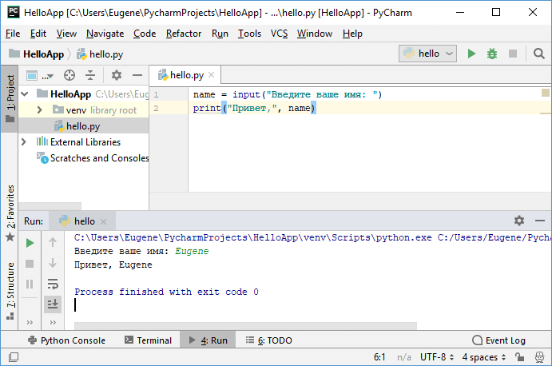

PyCharm
В прошлой теме было описано создание простейшего скрипта на языке Python. Для создания скрипта использовался текстовый редактор. В моем случае это был Notepad++. Но есть и другой способ создания программ, который представляет использование различных интегрированных сред разработки или IDE.
IDE предоставляют нам текстовый редактор для набора кода, но в отличие от стандартных текстовых редакторов, IDE также обеспечивает полноценную подсветку синтаксиса, автодополнение или интеллектуальную подсказку кода, возможность тут же выполнить созданный скрипт, а также многое другое.
Для Python можно использовать различные среды разработки, но одной из самых популярных из них является среда PyCharm, созданная компанией JetBrains. Эта среда динамично развивается, постоянно обновляется и доступна для наиболее распространенных операционных систем - Windows, MacOS, Linux.
Правда, она имеет одно важное ограничение. А именно она доступна в двух основных вариантах: платный выпуск Professional и бесплатный Community. Многие базовые возможности доступны и в бесплатном выпуске Community. В то же время ряд возможностей, например, веб-разработка, доступны только в платном Professional.
В нашем случае воспользуемся бесплатным выпуском Community. Для этого перейдем на страницу загрузки и загрузим установочный файл PyCharm Community. После загрузки выполним его установку.
После завершения установки запустим программу. При первом запуске открывается начальное окно:
Создадим проект и для этого выберем пункт Create New Project.
Далее нам откроется окно для настройки проекта. В поле Location необходимо указать путь к проекту. В моем случае проект будет помещаться в папку HelloApp. Собственно название папки и будет названием проекта.
Следует отметить, что PyCharm позволяет разграничить настройки проектов. Так, по умолчанию выбрано поле New Environment Using, что позволяет установить версию интерпретатора для конкретного проекта. Затем все устанавливаемые дополнительные пакеты будут касаться только текущего проекта. Это удобно, если мы создаем несколько проектов, но каждый из которых рабоает с какой-то специфической версией интерпретатора. Но в качестве альтернативы мы также можем выбрать поле Existing Interpreter и задать путь к файлу интерпретатора глобально для всех проектов.
В реальности для первого простейшего приложения на PyCharm не имеет значения, как будет установлен интерпертатор. Однако данном же случае оставим выбранный по умолчанию флажок New Environment Using и под ним в поле Base Interpreter укажем путь к файлу интерпретатора, установка которого рассматривалась в первой теме.
И после установки всех путей нажмем на кнопку Create для создания проекта.
После этого будет создан пустой проект:
Теперь создадим простейшую программу. Для этого нажмем на название проекта правой кнопкой мыши и в появившемся контекстном меню выберем New -> Python File.
Затем откроется окно, в котором надо будет указать название файла. Пусть файл называется hello:
В созданный файл введем следующие строки:
name = input("Введите ваше имя: ")
print("Привет,", name)
Для запуска скрипта нажмем на него правой кнопкой мыши и в контекстном меню выберем Run 'hello' (либо перейдем в меню Run и там нажмем на подпункт Run...):
После этого внизу IDE отобразится окно вывода, где надо будет ввести имя и где после этого будет выведено приветствие:
